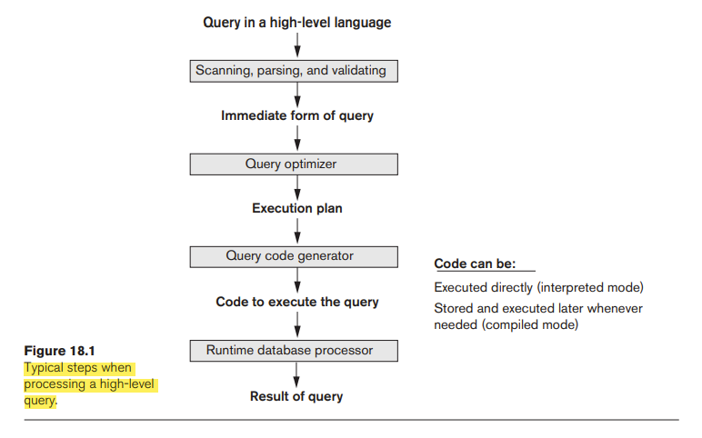

↩️ tdt4145
18 Strategies for Query Processing
The scanner identifies the query tokens—such as SQL keywords, attribute names, and relation names. the parser checks the query syntax to determine whether it is formulated according to the syntax rules (rules of grammar) of the query language. the parser checks the query syntax to determine whether it is formulated according to the syntax rules (rules of grammar) of the query language. The parser checks the query syntax to determine whether it is formulated according to the syntax rules (rules of grammar) of the query language.
The query optimizer module has the task of producing a good execution plan, and the code generator generates the code to execute that plan. The runtime database processor has the task of running (executing) the query code, whether in compiled or interpreted mode, to produce the query result.

Translating SQL Queries into Relational Algebra and Other Operators
Additional Operators Semi-Join and Anti-Join
To remove the nested query is called as unnesting. It leads an operation called semi-join.
Anti-join is used for unnesting NOT EXISTS, NOT IN, and ALL subqueries.
Algorithms for External Sorting
Note that sorting of a particular file may be avoided if an appropriate index— such as a primary or clustering index exists on the desired file attribute to allow ordered access to the records of the file.
External sorting refers to sorting algorithms that are suitable for large files of records stored on disk that do not fit entirely in main memory. The typical external sorting algorithm uses a sort-merge strategy, which starts by sorting small subfiles—called runs—of the main file and then merges the sorted runs, creating larger sorted subfiles that are merged in turn.
The buffer space is divided into individual buffers, where each buffer is the same size in bytes as the size of one disk block.
In the sorting phase, runs that can fit in the available buffer space are read into main memory, sorted using an internal sorting algorithm, and written back to disk as temporary sorted subfiles (or runs).
number of initial runs (nR) number of file blocks (b) available buffer space (nB). nR= ⎡(b/nB)⎤
In the merging phase, the sorted runs are merged during one or more merge passes. Each merge pass can have one or more merge steps.The degree of merging (dM) is the number of sorted subfiles that can be merged in each merge step. dM is the smaller of (nB − 1) and nR, and the number of merge passes is ⎡(logdM(nR))⎤.
number of disk block reads and writes: (2 _ b) + (2 _ b * (logdM nR))
Algorithms for SELECT Operation
Search Methods for Simple Selection.
- S1 Linear search (brute force algorithm). Retrieve every record in the file, and test whether its attribute values satisfy the selection condition.
- S2 Binary search.
- S3a Using a primary index.
- S3b Using a hash key.
- S4 Using a primary index to retrieve multiple records.
- S5 Using a clustering index to retrieve multiple records.
- S6 Using a secondary (B+-tree) index on an equality comparison.
- S7a Using a bitmap index.
- S7b Using a functional index.
Method S1 (linear search) applies to any file. Method S2 (binary search) requires the file to be sorted. The methods that use an index (S3a, S4, S5, and S6) are generally referred to as index searches, and they require the appropriate index to exist. Methods S4 and S6 can be used to retrieve records in a certain range in range queries. Method S7a (bitmap index search) is suitable for retrievals where an attribute must match an enumerated set of values. Method S7b (functional index search) is suitable when the match is based on a function of one or more attributes on which a functional index exists.
Search Methods for Conjunctive Selection
Conjunctive condition—that is, if it is made up of several simple conditions connected with the AND logical connective the DBMS can use the following additional methods to implement the operation:
The DBMS can use the following additional methods to implement the operation:
- S8 Conjunctive selection using an individual index.
- S9 Conjunctive selection using a composite index.
- S10 Conjunctive selection by intersection of record pointers.
Search Methods for Disjunctive Selection
A disjunctive condition (where simple conditions are connected by the OR logical connective rather than by AND) is much harder to process and optimize.
Only if an access path exists on every simple condition in the disjunction can we optimize the selection by retrieving the records satisfying each condition—or their record ids—and then applying the union operation to eliminate duplicates.
Estimating the Selectivity of a Condition
To minimize the overall cost of query execution in terms of resources used and response time, the query optimizer receives valuable input from the system catalog, which contains crucial statistical information about the database.
Information in the Database Catalog.
When the optimizer is choosing between multiple simple conditions in a conjunctive select condition, it typically considers the selectivity of each condition. The selectivity (sl) is defined as the ratio of the number of records (tuples) that satisfy the condition to the total number of records (tuples) in the file (relation).
Estimates of selectivities are possible from the information kept in the DBMS catalog and are used by the optimizer.
Implementing the JOIN Operation
Methods for Implementing Joins
- J1 Nested-loop join (or nested-block join).
- J2 Index-based nested-loop join (using an access structure to retrieve the matching records).
- J3 Sort-merge join.
- J4 Partition-hash join (or just hash-join).
How Buffer Space and Choice of Outer-Loop File Affect Performance of Nested-Loop Join
It is advantageous to read as many blocks as possible at a time into memory from the file whose records are used for the outer loop.
An extra buffer in main memory is needed to contain the resulting records after they are joined, and the contents of this result buffer can be appended to the result file whenever it is filled.
Total number of blocks accessed (read) for outer-loop file = bE Number of times (nB − 2) blocks of outer file are loaded into main memory = ⎡bE/(nB – 2)⎤ Total number of blocks accessed (read) for inner-loop file = bD * ⎡bE/(nB – 2)⎤
we get the following total number of block read accesses: bE + ( ⎡bE/(nB − 2)⎤ * bD)
If the result file of the join operation has bRES disk blocks, each block is written once to disk, so an additional bRES block accesses (writes) should be added to the preceding formulas in order to estimate the total cost of the join operation.
Join selection factor: the fraction of records in one file that will be joined with records in the other file. This factor depends on the particular equijoin condition between the two files.
The file with the high join selection factor) should be used in the (single) join loop.
20 Introduction to Transaction Processing Concepts and Theory
Introduction to Transaction Processing
Single-User versus Multiuser Systems
One criterion for classifying a database system is according to the number of users who can use the system concurrently. A DBMS is single-user if at most one user at a time can use the system, and it is multiuser if many users can use the system— and hence access the database—concurrently.
Most of the theory concerning concurrency control in databases is developed in terms of interleaved concurrency.
Transactions, Database Items, Read and Write Operations, and DBMS Buffers
A transaction is an executing program that forms a logical unit of database processing. A transaction includes one or more database access operations—these can include insertion, deletion, modification (update), or retrieval operations.
A database is basically represented as a collection of named data items. The size of a data item is called its granularity. A data item can be a database record, but it can also be a larger unit such as a whole disk block, or even a smaller unit such as an individual field (attribute) value of some record in the database.
The read-set of a transaction is the set of all items that the transaction reads, and the write-set is the set of all items that the transaction writes.
Why Concurrency Control Is Needed
- The Lost Update Problem.
- The Temporary Update (or Dirty Read) Problem.
- The Incorrect Summary Problem.
- The Unrepeatable Read Problem.
Why Recovery Is Needed
If a transaction fails after executing some of its operations but before executing all of them, the operations already executed must be undone and have no lasting effect.
Types of Failures. Failures are generally classified as transaction, system, and media failures. There are several possible reasons for a transaction to fail in the middle of execution:
- A computer failure (system crash).
- A transaction or system error.
- Local errors or exception conditions detected by the transaction.
- Concurrency control enforcement.
- Disk failure.
- Physical problems and catastrophes.
Transaction and System Concepts
Transaction States and Additional Operations
A transaction is an atomic unit of work that should either be completed in its entirety or not done at all. For recovery purposes, the system needs to keep track of when each transaction starts, terminates, and commits, or aborts. Therefore, the recovery manager of the DBMS needs to keep track of the following operations:
- BEGIN_TRANSACTION.
- READ or WRITE.
- END_TRANSACTION.
- COMMIT_TRANSACTION.
- ROLLBACK (or ABORT).
A transaction goes into an active state immediately after it starts execution, where it can execute its READ and WRITE operations. When the transaction ends, it moves to the partially committed state. At this point, some types of concurrency control protocols may do additional checks to see if the transaction can be committed or not.
If these checks are successful, the transaction is said to have reached its commit point and enters the committed state. When a transaction is committed, it has concluded its execution successfully and all its changes must be recorded perma nently in the database, even if a system failure occurs.
However, a transaction can go to the failed state if one of the checks fails or if the transaction is aborted during its active state. The terminated state corresponds to the transaction leaving the system.
The System Log
To be able to recover from failures that affect transactions, the system maintains a log6 to keep track of all transaction operations that affect the values of database items, as well as other transaction information that may be needed to permit recovery from failures. The log is a sequential, append-only file that is kept on disk, so it is not affected by any type of failure except for disk or catastrophic failure.
The following are the types of entries—called log records—that are written to the log file and the corresponding action for each log record.
- [start_transaction, T]. Indicates that transaction T has started execution.
- [write_item, T, X, old_value, new_value]. Indicates that transaction T has changed the value of database item X from old_value to new_value.
- [read_item, T, X]. Indicates that transaction T has read the value of database item X.
- [commit, T]. Indicates that transaction T has completed successfully, and affirms that its effect can be committed (recorded permanently) to the database.
- [abort, T]. Indicates that transaction T has been aborted.
Protocols for recovery that avoid cascading rollbacks which include nearly all practical protocols—do not require that READ operations are written to the system log. Additionally, some recovery protocols require simpler WRITE entries that only include one of new_value or old_value instead of including both.
Because the log contains a record of every WRITE operation that changes the value of some database item, it is possible to undo the effect of these WRITE operations of a transaction T by tracing backward through the log and resetting all items changed by a WRITE operation of T to their old_values. Redo of an operation may also be necessary if a transaction has its updates recorded in the log but a failure occurs before the system can be sure that all these new_values have been written to the actual database on disk from the main memory buffers.
Commit Point of a Transaction
A transaction T reaches its commit point when all its operations that access the database have been executed successfully and the effect of all the transaction operations on the database have been recorded in the log. Beyond the commit point, the transaction is said to be committed, and its effect must be permanently recorded in the database. The transaction then writes a commit record [commit, T] into the log.
If a system failure occurs, we can search back in the log for all transactions T that have written a [start_transaction, T] record into the log but have not written their [commit, T] record yet; these transactions may have to be rolled back to undo their effect on the database during the recovery process. Transactions that have written their commit record in the log must also have recorded all their WRITE operations in the log, so their effect on the database can be redone from the log records.
At the time of a system crash, only the log entries that have been written back to disk are considered in the recovery process if the contents of main memory are lost.
before a transaction reaches its commit point, any portion of the log that has not been written to the disk yet must now be written to the disk. This process is called force-writing
DBMS-Specific Buffer Replacement Policies
If all the buffers in the DBMS cache are occupied and new disk pages are required to be loaded into main memory from disk, a page replacement policy is needed to select the particular buffers to be replaced.
Domain Separation (DS) Method. the DBMS cache is divided into separate domains (sets of buffers). Each domain handles one type of disk pages, and page replacements within each domain are handled via the basic LRU (least recently used) page replacement.
Hot Set Method. The hot set method determines for each database processing algorithm the set of disk pages that will be accessed repeatedly, and it does not replace them until their processing is completed.
The DBMIN Method. The DBMIN page replacement policy will calculate a locality set using QLSM for each file instance involved in the query. then allocates the appropriate number of buffers to each file instance involved in the query based on the locality set for that file instance.
Desirable Properties of Transactions
The following are the ACID properties:
- Atomicity.
- Consistency preservation.
- Isolation.
- Durability or permanency.
It is the responsibility of the transaction recovery subsystem of a DBMS to ensure atomicity. If a transaction fails to complete for some reason the recovery technique must undo any effects of the transaction on the database.
The preservation of consistency is generally considered to be the responsibility of the programmers. A consistent state of the database satisfies the constraints specified in the schema as well as any other constraints on the database that should hold.
The isolation property is enforced by the concurrency control subsystem of the DBMS.
The durability property is the responsibility of the recovery subsystem of the DBMS.
There have been attempts to define the level of isolation of a transaction. A transaction is said to have level 0 (zero) isolation if it does not overwrite the dirty reads of higher-level transactions. Level 1 (one) isolation has no lost updates, and level 2 isolation has no lost updates and no dirty reads. Finally, level 3 isolation (also called true isolation) has, in addition to level 2 properties, repeatable reads.9 Another type of isolation is called snapshot isolation.